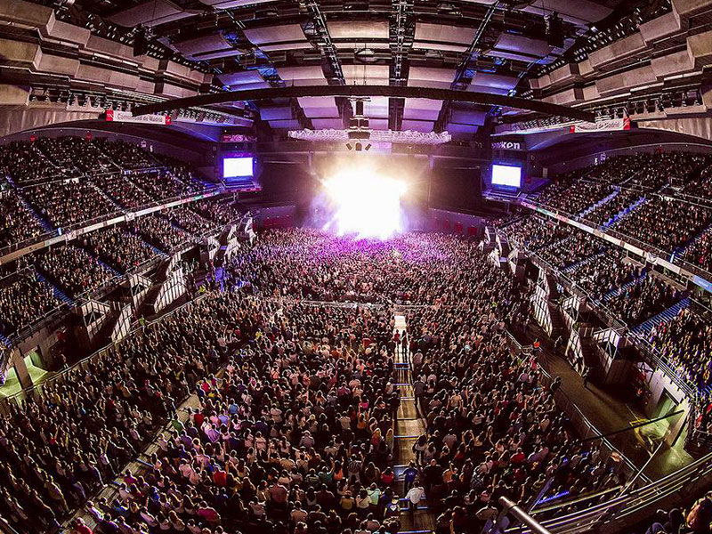
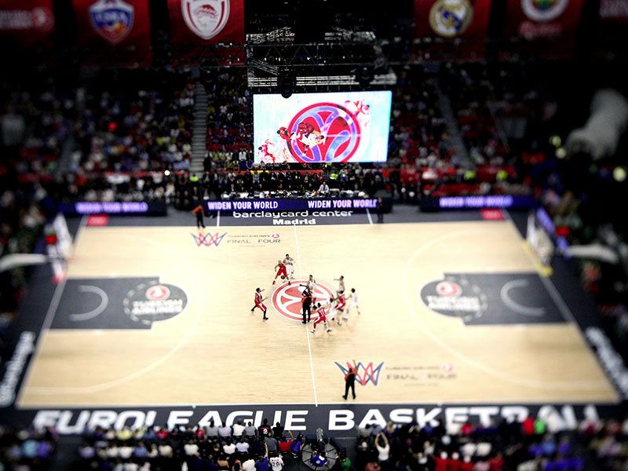
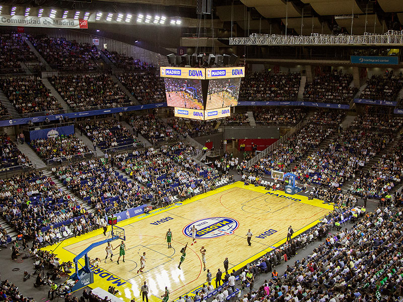

Real Madrid CB
Real Madrid CBTour e historia
WiZink Center
Emblemático y moderno recinto que organiza conciertos, actos deportivos y ferias para hasta 15 mil personas. Los partidos del club se celebran aquí.
Historia del Palacio de Deportes, ahora WiZink Center.
En 1985 la titularidad del Palacio fue transferida a la Comunidad de Madrid, que emprendió una reforma integral del edificio. Desde entonces, se ha consolidado como el recinto de referencia tanto en la ciudad de Madrid como a nivel nacional en lo que a celebración de eventos se refiere. Desde el 1 de enero de 2014, tras su designación como adjudicataria del concurso público convocado por el Instituto Madrileño del Deporte, Impulsa Eventos e Instalaciones S.A. es la sociedad gestora del Palacio. Dicha adjudicación se realizó por un periodo de 10 años, hasta el 31 de diciembre de 2023, prorrogable cinco años más.
Reinaugurado en 2005
Desde su reinauguración y potenciada desde la fundación de la sociedad Impulsa Eventos e Instalaciones S.A., el Palacio de Deportes de la Comunidad de Madrid es un ejemplo de promoción deportiva y cultural gracias a la sobrada experiencia en la gestión de eventos deportivos, espectáculos, conciertos, actos culturales y corporativos.
Deporte y sobre todo baloncesto
El baloncesto continúa siendo el impulso principal del recinto que, además de ser la sede del Real Madrid y el Movistar Estudiantes, ha sido escenario de numerosas competiciones internacionales, como partidos de la NBA, el Mundial de Baloncesto en 2014, la Final Four, o los Campeonatos del Mundo de Judo y Karate, así como la Copa Nacional de Fútbol Sala, entre otros.
Visita nuestra siguiente página para ver las distintas instalaciones.